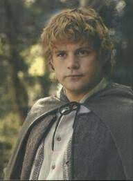

Le Seigneur des anneaux : La Communauté de l'anneau (The Lord of The Rings: The Fellowship of the Ring) est un film américano-néo-zélandais réalisé, coproduit et coécrit par Peter Jackson, sorti en 2001. C'est le premier volet de la trilogie Le Seigneur des anneaux et l'adaptation du livre La Communauté de l'Anneau (1954) de J. R. R. Tolkien. L'histoire commence lorsque, sur la Terre du Milieu, le magicien Gandalf le Gris (Ian McKellen) découvre que l'anneau que possède le jeune Hobbit Frodon Sacquet (Elijah Wood), qui lui a été légué par son oncle Bilbon et qui permet de se rendre invisible, est en réalité l'Anneau unique recherché avidement par le seigneur ténébreux Sauron car il lui permettrait de retrouver toute sa puissance. Afin d'éviter que Sauron ne récupère l'anneau, Frodon et ses huit compagnons, la Communauté de l'Anneau, entament un périlleux voyage dans le but de le détruire. À sa sortie au cinéma, le film a été un immense succès commercial et a obtenu des critiques très positives dans l'ensemble. Il a également remporté de nombreuses récompenses, dont quatre Oscars et quatre BAFTA Awards. L'American Film Institute l'a classé 50e dans sa liste des 100 meilleurs films américains, ainsi que deuxième meilleur film de fantasy de tous les temps. Une version longue du film comportant trente minutes de scènes supplémentaires est sortie uniquement pour le marché vidéo.
| ACTEUR | ROLE | ||
|---|---|---|---|
| Elijah Wood | Frodon Sacquet | ||
| Ian McKellen | Gandalf le Gris | |
|
| Sean Astin | Samsagace Gamegie alias Sam |  | |
| Viggo Mortensen | Aragorn | ||
| Sean Bean | Boromir | ||
| Billy Boyd | Peregrin Touque alias Pippin | ||
| Dominic Monaghan | Meriadoc Brandebouc alias Merry | ||
| Orlando Bloom | Legolas | ||
| John Rhys-Davies | Gimli | |
|
| Christopher Lee | Saroumane | ||
| Liv Tyler | Arwen | ||
| Cate Blanchett | Galadriel | ||
| Hugo Weaving | Elrond | ||
| Ian Holm | Bilbon Sacquet | ||
| Marton Csokas | Celeborn | ||
| Sala Baker | Sauron | |
|
| Craig Parker | Haldir | ||
| Andy Serkis | Gollum | ||